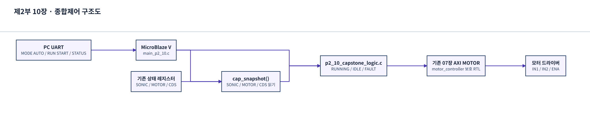

00이 장의 목표
모터 하드웨어 인터록과 C 명령 정책의 역할 분리·Top 배선·센서 경로
- Basys3 XC7A35T
- Vivado/Vitis 2024.2
- AXI4-Lite
- UART ASCII
- 종합제어 + 인터록
01신규 하드웨어 변경이 없는 이유
RTL10장에는 신규 Verilog 모듈이나 새 AXI Slave를 만들지 않습니다. 01~09장 구조와 보드 Top을 재사용하고, 10장 특유의 상태 관리·모드 전환은 MicroBlaze V의 C 모듈에 배치합니다. 안전 차단은 기존 07장 모터 RTL에서 수행합니다.

02basys3_soc11_top — 전체 코드
RTL// P2-08 USER TOP: Shell/Wrapper ONLY. No always/FSM/policy expressions.
// (유지) LED0 P2-01; LED1 P2-05 AUTO/PWM controller;
// (변경) LED2 P2-06 sonic_alert, LED3~15 old GPIO.
// WARNING: generated BD Wrapper must expose vauxp6/vauxn6 before this file can elaborate.
module basys3_soc11_top (
input wire clk, input wire btnC,
input wire btnU, input wire btnD, input wire btnL, input wire btnR,
input wire cds_digital, // JA1, J1 (P2-05)
output wire sonic_trig, // JA2, L2; see level-shifting note
input wire sonic_echo, // JA3, J2; external 5V->3.3V conversion required
output wire motor_in1, output wire motor_in2, output wire motor_ena,
input wire [15:0] sw, output wire [15:0] led,
// (추가) JXADC1(P)·JXADC7(N) : VAUX6 쌍, 디지털 I/O 아님.
input wire vauxp6, input wire vauxn6,
input wire RsRx, output wire RsTx,
output wire [6:0] seg, output wire [3:0] an, output wire dp
);
wire [15:0] gpio_led;
wire p2_led0;
wire pwm_led1;
wire auto_enable, cds_dark, cds_valid;
wire light_led1;
wire sonic_alert, sonic_unsafe;
auto_light_controller u_light_controller (
.pwm_led_i(pwm_led1),.auto_enable_i(auto_enable),
.sensor_dark_i(cds_dark),.sensor_valid_i(cds_valid),
.led1_o(light_led1)
);
// (변경) Pure board-bit wiring; LED2 has exactly one source.
assign led = {gpio_led[15:3], sonic_alert, light_led1, p2_led0};
soc11_integration_wrapper u_soc11 (
.clk(clk),.btnC(btnC),
.btnU(btnU),.btnD(btnD),.btnL(btnL),.btnR(btnR),
.sw_tri_i(sw),.led_tri_o(gpio_led),
.UART_0_rxd(RsRx),.UART_0_txd(RsTx),
.p2_led_o(p2_led0),.pwm_led1(pwm_led1),
.fnd_seg(seg),.fnd_an(an),.fnd_dp(dp),
.cds_digital(cds_digital),
.cds_dark(cds_dark),.cds_valid(cds_valid),
.cds_auto_enable(auto_enable),
.sonic_trig(sonic_trig),.sonic_echo(sonic_echo),
.sonic_alert(sonic_alert),.sonic_unsafe(sonic_unsafe),
.motor_in1(motor_in1),.motor_in2(motor_in2),
.motor_ena(motor_ena),
// (추가) BD XADC Wizard Vaux6를 Make External 후 wrapper 포트 재생성.
.vauxp6(vauxp6),.vauxn6(vauxn6)
);
endmodule
Top의 assign led는 보드 비트 소유권을 위한 단순 배선만 표현하며, 새로운 조건 판정은 추가하지 않습니다. gpio_led[15:3]에는 LED14/15가 포함됩니다.
03motor_controller.v — 하드웨어 차단 경로
RTL`timescale 1ns/1ps
// P2-07 reusable motor controller; no AXI or board-specific pins.
// (추가) Valid, recent HC-SR04 data + AUTO must exist before any drive.
// (추가) Near/fault/timeout immediately disables ENA via combinational gating.
// (추가) Fault while commanded latches TRIP; MOTOR STOP clears, FWD/REV re-arms.
module motor_controller #(
parameter integer DEADTIME_CYCLES = 10000000, // 100 ms at 100MHz
parameter integer FRESH_CYCLES = 25000000 // 250 ms at 100MHz
)(
input wire clk, input wire resetn,
input wire [1:0] request_i, // 0 STOP, 1 FWD, 2 REV
input wire stop_clear_i, // One-clock pulse on MOTOR STOP write
input wire sonic_auto_i, input wire sonic_done_i,
input wire sonic_valid_i, input wire sonic_unsafe_i,
output wire motor_in1_o, output wire motor_in2_o, output wire motor_ena_o,
output wire [1:0] active_dir_o,
output wire sensor_safe_o, output wire fresh_o,
output reg trip_latched_o, output wire deadtime_o
);
reg [31:0] fresh_count, dead_count;
reg [1:0] drive_dir;
// Always gate the physical outputs, even before the next clock edge.
assign fresh_o = (fresh_count != 32'd0);
assign sensor_safe_o = sonic_auto_i && fresh_o &&
sonic_valid_i && !sonic_unsafe_i;
wire output_allowed = sensor_safe_o && !trip_latched_o &&
!stop_clear_i && (request_i != 2'd0);
assign motor_in1_o = output_allowed && (drive_dir == 2'd1);
assign motor_in2_o = output_allowed && (drive_dir == 2'd2);
assign motor_ena_o = motor_in1_o || motor_in2_o;
assign active_dir_o = motor_ena_o ? drive_dir : 2'd0;
assign deadtime_o = (dead_count != 32'd0);
always @(posedge clk) begin
if (!resetn) begin
fresh_count <= 32'd0;
dead_count <= 32'd0;
drive_dir <= 2'd0;
trip_latched_o <= 1'b0;
end else begin
// Stale/invalid/off -> stop. Periodic successful DONE re-arms freshness.
if (!sonic_auto_i || !sonic_valid_i || sonic_unsafe_i)
fresh_count <= 32'd0;
else if (sonic_done_i)
fresh_count <= FRESH_CYCLES;
else if (fresh_count != 32'd0)
fresh_count <= fresh_count - 32'd1;
if (stop_clear_i)
trip_latched_o <= 1'b0;
else if (request_i != 2'd0 && !sensor_safe_o)
trip_latched_o <= 1'b1;
if (!sensor_safe_o || trip_latched_o || stop_clear_i ||
request_i == 2'd0 || request_i == 2'd3) begin
drive_dir <= 2'd0;
// (변경) STOP after motion must not bypass reversal dead-time.
if (drive_dir != 2'd0)
dead_count <= DEADTIME_CYCLES;
else if (dead_count != 32'd0)
dead_count <= dead_count - 32'd1;
end else if (drive_dir != 2'd0 && drive_dir != request_i) begin
// Disable bridge, then enforce a direction-change dead time.
drive_dir <= 2'd0;
dead_count <= DEADTIME_CYCLES;
end else if (drive_dir == 2'd0) begin
if (dead_count != 32'd0)
dead_count <= dead_count - 32'd1;
else
drive_dir <= request_i;
end
end
end
endmodule
sensor_safe_o는 SONIC AUTO·유효 데이터·신선도·위험 여부를 모두 확인합니다. motor_ena_o는 하드웨어에서 직접 게이팅됩니다. 이번 10장의 RUN 정책은 이 조건을 우회하지 않습니다.
04초음파 IP와 모터 IP 간 실시간 신호
RTLsonic_auto_o, sonic_done_o, sonic_valid_o, sonic_unsafe_o는 06장 IP에서 07장 모터 IP로 직접 연결되어야 합니다. CPU는 AXI 상태를 읽어 추가로 오류 래치를 구현합니다. 하드웨어 연결은 사용 중인 BD에서 확인 해야 합니다.
| 신호 | 의미 |
|---|---|
sonic_auto_o | 연속 측정 설정 |
sonic_done_o | 거리 측정 완료 펄스 |
sonic_valid_o | 측정 유효 |
sonic_unsafe_o | 근접 또는 데이터 무효 |
motor_ena_o | 실제 모터 구동 허용 출력 |
05XADC 안전 규칙
RTLXADC는 기존 08장 AXI XADC Wizard로 측정값을 제공합니다. ADC READ는 상태 레지스터에 저장된 값을 읽는 기능이며, 현재 새로운 변환 완료를 증명하지 않습니다. 따라서 캡스톤 RUN START의 필수 안전 조건에는 XADC 값을 넣지 않았습니다. 이는 미구현 안전 기능을 구현했다고 주장하지 않기 위한 구분입니다.
06IP 전체 레지스터·커넥터 확인
RTL실제 프로젝트에서 Address Editor의 BaseAddr, AXI Interconnect 연결, IRQ 라인, 외부 센서 핀, Reset·Clock Domain을 확인합니다. 해당 자료 없이는 실제 Address Map을 확정할 수 없습니다.
| 기존 자원 | 설계 계약 |
|---|---|
| P2-01 LED | LED0, AXI REG0 bit0 |
| P2-02 FND | 4자리 BCD, Active-Low 출력 |
| P2-03 Button | BTN U/D/L/R, BTNC reset, IRQ |
| P2-04/05 LED1 | PWM Core + CdS AUTO 게이트 |
| P2-06 SONIC | TRIG/ECHO, LED2, 안전 상태 |
| P2-07 MOTOR | IN1/IN2/ENA, 근접/신선도/Deadtime |
| P2-08 XADC | VAUX6 차동 입력 |
| P2-09 GPIO/Timer | LED14 UART 활동, LED15 Timer IRQ |
| P2-10 RUN | 기존 레지스터만 이용하는 새 C 정책 |
07재사용 RTL 전체 파일 링크
RTL각 파일은 앞선 장의 소스를 그대로 재사용합니다.
08실습 파일
`timescale 1ns / 1ps
// P2-02: Basys3 four-digit seven-segment scanning controller.
// This module has no AXI or board pin names; it is reusable.
module fnd_scan_controller #(
parameter integer TICKS_PER_DIGIT = 100000
)(
input wire clk,
input wire resetn,
input wire [15:0] display_bcd, // [15:12] leftmost .. [3:0] rightmost
input wire display_enable,
output wire [6:0] seg, // {g,f,e,d,c,b,a}, active low
output wire [3:0] an, // an[0] rightmost, active low
output wire dp // decimal point off, active low
);
localparam integer COUNT_WIDTH = (TICKS_PER_DIGIT > 1) ?
$clog2(TICKS_PER_DIGIT) : 1;
reg [COUNT_WIDTH-1:0] divider_count;
reg [1:0] scan_index;
reg [15:0] frame_bcd;
reg frame_enable;
reg [3:0] current_digit;
reg [6:0] seg_mux;
reg [3:0] an_mux;
assign dp = 1'b1; // decimal point is always off
// 첫 리셋 클록 전에도 외부 핀에 X가 노출되지 않게 즉시 소등한다.
assign seg = resetn ? seg_mux : 7'b1111111;
assign an = resetn ? an_mux : 4'b1111;
// Latch all four digits only at a scan-frame boundary.
// One write to REG0 can never tear individual digits within a frame.
always @(posedge clk) begin
if (!resetn) begin
divider_count <= {COUNT_WIDTH{1'b0}};
scan_index <= 2'd0;
frame_bcd <= 16'h0000;
frame_enable <= 1'b0;
end else if (divider_count == TICKS_PER_DIGIT - 1) begin
divider_count <= {COUNT_WIDTH{1'b0}};
scan_index <= scan_index + 2'd1;
if (scan_index == 2'd3) begin
frame_bcd <= display_bcd;
frame_enable <= display_enable;
end
end else begin
divider_count <= divider_count + 1'b1;
end
end
// Basys3 AN0 is the rightmost digit; AN3 is the leftmost.
always @(*) begin
case (scan_index)
2'd0: current_digit = frame_bcd[3:0];
2'd1: current_digit = frame_bcd[7:4];
2'd2: current_digit = frame_bcd[11:8];
default: current_digit = frame_bcd[15:12];
endcase
// seg[0] is segment 'a'; 0 lights a segment.
case (current_digit)
4'd0: seg_mux = 7'b1000000;
4'd1: seg_mux = 7'b1111001;
4'd2: seg_mux = 7'b0100100;
4'd3: seg_mux = 7'b0110000;
4'd4: seg_mux = 7'b0011001;
4'd5: seg_mux = 7'b0010010;
4'd6: seg_mux = 7'b0000010;
4'd7: seg_mux = 7'b1111000;
4'd8: seg_mux = 7'b0000000;
4'd9: seg_mux = 7'b0010000;
default: seg_mux = 7'b1111111; // invalid BCD nibble -> blank
endcase
if (!frame_enable) begin
an_mux = 4'b1111; // OFF: disable all digits
seg_mux = 7'b1111111;
end else begin
case (scan_index)
2'd0: an_mux = 4'b1110;
2'd1: an_mux = 4'b1101;
2'd2: an_mux = 4'b1011;
default: an_mux = 4'b0111;
endcase
end
end
endmodule
`timescale 1ns/1ps
// P2-03: reusable four-button synchronizer, debounce, short/long event generator.
// btn_raw[0]=UP, [1]=DOWN, [2]=LEFT, [3]=RIGHT; active high.
// event_pulse[0..3]=short on debounced release;
// event_pulse[4..7]=long once at threshold, while held.
module button_event_core #(
parameter integer DEBOUNCE_CYCLES = 2000000, // 20 ms at 100 MHz
parameter integer LONG_CYCLES = 500000000 // 5 s at 100 MHz
)(
input wire clk,
input wire resetn,
input wire [3:0] btn_raw,
output reg [7:0] event_pulse,
output wire [3:0] pressed
);
// $clog2 helps keep a small counter for accelerated TB parameters.
localparam integer DB_W = (DEBOUNCE_CYCLES < 2) ? 1 : $clog2(DEBOUNCE_CYCLES+1);
localparam integer LONG_W = (LONG_CYCLES < 2) ? 1 : $clog2(LONG_CYCLES+1);
genvar k;
generate for (k=0; k<4; k=k+1) begin: g_button
(* ASYNC_REG = "TRUE" *) reg meta;
(* ASYNC_REG = "TRUE" *) reg synced;
reg debounced;
reg [DB_W-1:0] db_ticks;
reg [LONG_W-1:0] hold_ticks;
reg long_sent;
assign pressed[k] = debounced;
always @(posedge clk) begin
if (!resetn) begin
meta <= 1'b0;
synced <= 1'b0;
debounced <= 1'b0;
db_ticks <= {DB_W{1'b0}};
hold_ticks <= {LONG_W{1'b0}};
long_sent <= 1'b0;
event_pulse[k] <= 1'b0;
event_pulse[k+4] <= 1'b0;
end else begin
// Two-register synchronizer for asynchronous button input.
meta <= btn_raw[k];
synced <= meta;
event_pulse[k] <= 1'b0;
event_pulse[k+4] <= 1'b0;
// Count only when the sampled value disagrees with stable state.
if (synced == debounced) begin
db_ticks <= {DB_W{1'b0}};
end else if (db_ticks == DEBOUNCE_CYCLES-1) begin
db_ticks <= {DB_W{1'b0}};
debounced <= synced;
if (synced) begin
hold_ticks <= {LONG_W{1'b0}};
long_sent <= 1'b0;
end else begin
// No short pulse after a long event on the same press.
if (!long_sent) event_pulse[k] <= 1'b1;
hold_ticks <= {LONG_W{1'b0}};
long_sent <= 1'b0;
end
end else begin
db_ticks <= db_ticks + 1'b1;
end
// Freeze time while synchronized input is low; avoids a
// false 5-second event during release debounce.
if (debounced && synced && !long_sent) begin
if (hold_ticks == LONG_CYCLES-1) begin
event_pulse[k+4] <= 1'b1;
long_sent <= 1'b1;
end else begin
hold_ticks <= hold_ticks + 1'b1;
end
end
end
end
end endgenerate
endmodule
`timescale 1ns/1ps
// P2-04: 보드와 무관한 단일 채널 범용 PWM 코어.
// (추가) period와 duty는 클록 횟수 단위. 0%/100%는 지속 LOW/HIGH.
// (추가) 설정은 주기 마지막 경계에서만 활성값으로 반영.
module pwm_core #(
parameter [31:0] RESET_PERIOD = 32'd100000
)(
input wire clk,
input wire resetn,
input wire cfg_apply,
input wire [31:0] cfg_period,
input wire [31:0] cfg_duty,
input wire cfg_enable,
input wire cfg_polarity,
output wire pwm_out,
output reg pending,
output reg [31:0] active_period,
output reg [31:0] active_duty,
output reg active_enable,
output reg active_polarity
);
reg [31:0] counter;
reg [31:0] shadow_period;
reg [31:0] shadow_duty;
reg shadow_enable;
reg shadow_polarity;
wire boundary = (counter >= active_period - 32'd1);
wire duty_high = (counter < active_duty);
// (주의) enable=0이면 polarity와 관계없이 LOW로 차단.
// (설명) 기본 polarity에서 active_duty=0이면 항상 LOW,
// active_duty=active_period이면 항상 HIGH.
assign pwm_out = resetn && active_enable &&
(active_polarity ? !duty_high : duty_high);
always @(posedge clk) begin
if (!resetn) begin
counter <= 32'd0;
active_period <= RESET_PERIOD;
active_duty <= 32'd0;
active_enable <= 1'b0;
active_polarity <= 1'b0;
shadow_period <= RESET_PERIOD;
shadow_duty <= 32'd0;
shadow_enable <= 1'b0;
shadow_polarity <= 1'b0;
pending <= 1'b0;
end else begin
if (boundary) begin
counter <= 32'd0;
if (pending) begin
active_period <= shadow_period;
active_duty <= shadow_duty;
active_enable <= shadow_enable;
active_polarity <= shadow_polarity;
pending <= 1'b0;
end
end else begin
counter <= counter + 32'd1;
end
// (추가) 경계와 APPLY가 겹치면 새 값은 다음 경계에 적용.
// 여러 APPLY가 겹치면 최종 요청값을 우선하는 단일 Shadow 구조.
if (cfg_apply) begin
shadow_period <= cfg_period;
shadow_duty <= cfg_duty;
shadow_enable <= cfg_enable;
shadow_polarity <= cfg_polarity;
pending <= 1'b1;
end
end
end
endmodule
`timescale 1ns/1ps
// P2-05 reusable digital CdS core. DO is an asynchronous 3.3V-safe input.
// 2FF synchronization -> programmable interpretation -> stable-count filter.
// FILTER_CYCLES=2,000,000 at a VERIFIED 100MHz AXI clock means about 20ms.
module cds_digital_core #(
parameter integer FILTER_CYCLES = 2000000
)(
input wire clk,
input wire resetn,
input wire cds_digital_i,
input wire dark_when_low,
output wire raw_sync,
output reg stable_dark,
output reg stable_valid
);
localparam integer CNT_W = (FILTER_CYCLES <= 2) ? 1 : $clog2(FILTER_CYCLES + 1);
reg sync_meta, sync_data;
reg polarity_q;
reg candidate_q;
reg [CNT_W-1:0] stable_count;
wire candidate = dark_when_low ? ~sync_data : sync_data;
// (추가) Two registers reduce metastability propagation probability.
// Neither filter nor 2FF replaces board-level 3.3V electrical protection.
always @(posedge clk) begin
if (!resetn) begin
sync_meta <= 1'b1;
sync_data <= 1'b1;
end else begin
sync_meta <= cds_digital_i;
sync_data <= sync_meta;
end
end
assign raw_sync = sync_data;
// (추가) On polarity changes, invalidate old interpretation and re-filter.
// Until valid, the automatic light gate will remain OFF (fail-off).
always @(posedge clk) begin
if (!resetn) begin
polarity_q <= 1'b1;
candidate_q <= 1'b0;
stable_count <= {CNT_W{1'b0}};
stable_dark <= 1'b0;
stable_valid <= 1'b0;
end else begin
polarity_q <= dark_when_low;
if (polarity_q != dark_when_low) begin
candidate_q <= candidate;
stable_count <= {CNT_W{1'b0}};
stable_dark <= 1'b0;
stable_valid <= 1'b0;
end else if (candidate != candidate_q) begin
candidate_q <= candidate;
stable_count <= {CNT_W{1'b0}};
end else if (!stable_valid || candidate != stable_dark) begin
if (stable_count >= FILTER_CYCLES - 1) begin
stable_dark <= candidate;
stable_valid <= 1'b1;
stable_count <= {CNT_W{1'b0}};
end else begin
stable_count <= stable_count + 1'b1;
end
end else begin
stable_count <= {CNT_W{1'b0}};
end
end
end
endmodule
`timescale 1ns/1ps
// P2-05 board-independent LED PWM gate. Input/output polarities are active-high.
// MANUAL (AUTO=0): retain P2-04 PWM output unmodified.
// AUTO=1: allow configured PWM only after stable dark is confirmed.
// If PWM=0%, AUTO ON does NOT force light on: user sets PWM brightness first.
module auto_light_controller (
input wire pwm_led_i,
input wire auto_enable_i,
input wire sensor_dark_i,
input wire sensor_valid_i,
output wire led1_o
);
assign led1_o = pwm_led_i &
(~auto_enable_i | (sensor_valid_i & sensor_dark_i));
endmodule
`timescale 1ns/1ps
// P2-06 HC-SR04 reusable timing core; no board pins or AXI dependency.
// (추가) 2FF Echo synchronizer, microsecond tick, bounded waits, cooldown.
// 100 MHz AXI clock -> 100 clocks / 1 us; 12 us TRIG, >=60 ms cooldown.
// Result is the last COMPLETED reading. valid_o and fault flags persist.
module hc_sr04_core #(
parameter integer CLK_HZ = 100000000,
parameter integer TRIG_US = 12,
parameter integer TIMEOUT_US = 38000,
parameter integer COOLDOWN_US = 60000
)(
input wire clk, input wire resetn,
input wire echo_i, input wire start_i,
output reg trig_o, output wire ready_o, output wire busy_o,
output reg done_pulse_o,
output reg [15:0] distance_cm_o,
output reg [31:0] echo_us_o,
output reg valid_o, output reg timeout_o, output reg out_range_o
);
localparam integer TICK_CYCLES = CLK_HZ / 1000000;
localparam [2:0] S_IDLE=3'd0, S_TRIG=3'd1,
S_WAIT=3'd2, S_ECHO=3'd3, S_COOL=3'd4;
reg [2:0] state;
reg [31:0] div_count, us_count, high_us;
reg echo_meta, echo_sync, echo_prev;
wire tick_us = (div_count == TICK_CYCLES-1);
wire echo_rise = echo_sync && !echo_prev;
reg echo_rise_pending; // Catch sub-us rising edges until the next us tick.
assign ready_o = (state == S_IDLE);
assign busy_o = !ready_o;
// (추가) FPGA input can be asynchronous. Metastability cannot be
// eliminated absolutely; this 2FF path lowers the risk.
always @(posedge clk) begin
if (!resetn) begin
echo_meta <= 1'b0;
echo_sync <= 1'b0;
echo_prev <= 1'b0;
end else begin
echo_meta <= echo_i;
echo_sync <= echo_meta;
echo_prev <= echo_sync;
end
end
always @(posedge clk) begin
if (!resetn || state != S_WAIT) echo_rise_pending <= 1'b0;
else if (echo_rise) echo_rise_pending <= 1'b1;
else if (tick_us) echo_rise_pending <= 1'b0;
end
always @(posedge clk) begin
if (!resetn) begin
div_count <= 32'd0;
state <= S_IDLE;
us_count <= 32'd0;
high_us <= 32'd0;
trig_o <= 1'b0;
done_pulse_o <= 1'b0;
distance_cm_o <= 16'd0;
echo_us_o <= 32'd0;
valid_o <= 1'b0;
timeout_o <= 1'b0;
out_range_o <= 1'b0;
end else begin
done_pulse_o <= 1'b0;
if (tick_us) div_count <= 32'd0;
else div_count <= div_count + 32'd1;
case (state)
S_IDLE: begin
if (start_i) begin
trig_o <= 1'b1;
us_count <= 32'd0;
high_us <= 32'd0;
state <= S_TRIG;
end
end
S_TRIG: if (tick_us) begin
if (us_count + 32'd1 >= TRIG_US) begin
trig_o <= 1'b0;
us_count <= 32'd0;
state <= S_WAIT;
end else us_count <= us_count + 32'd1;
end
S_WAIT: if (tick_us) begin
if (echo_rise_pending || echo_rise) begin
// Edge latched at 100MHz to avoid missing it on us tick.
high_us <= 32'd1;
us_count <= 32'd0;
state <= S_ECHO;
end else if (us_count + 32'd1 >= TIMEOUT_US) begin
valid_o <= 1'b0;
timeout_o <= 1'b1;
out_range_o <= 1'b0;
distance_cm_o <= 16'd0;
echo_us_o <= 32'd0;
done_pulse_o <= 1'b1;
us_count <= 32'd0;
state <= S_COOL;
end else us_count <= us_count + 32'd1;
end
S_ECHO: if (tick_us) begin
if (!echo_sync) begin
echo_us_o <= high_us;
// D(cm) ~= EchoHigh(us)/58 at nominal room temperature.
if (high_us >= 32'd116 && high_us <= 32'd23200) begin
distance_cm_o <= (high_us + 32'd29) / 32'd58;
valid_o <= 1'b1;
timeout_o <= 1'b0;
out_range_o <= 1'b0;
end else begin
distance_cm_o <= 16'd0;
valid_o <= 1'b0;
timeout_o <= 1'b0;
out_range_o <= 1'b1;
end
done_pulse_o <= 1'b1;
us_count <= 32'd0;
state <= S_COOL;
end else if (high_us >= TIMEOUT_US) begin
echo_us_o <= high_us;
distance_cm_o <= 16'd0;
valid_o <= 1'b0;
timeout_o <= 1'b1;
out_range_o <= 1'b0;
done_pulse_o <= 1'b1;
us_count <= 32'd0;
state <= S_COOL;
end else high_us <= high_us + 32'd1;
end
S_COOL: if (tick_us) begin
if (us_count + 32'd1 >= COOLDOWN_US) begin
us_count <= 32'd0;
state <= S_IDLE;
end else us_count <= us_count + 32'd1;
end
default: state <= S_IDLE;
endcase
end
end
endmodule